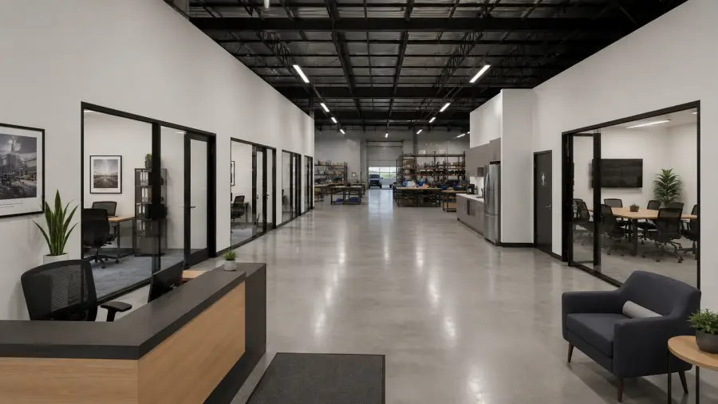

How much power does a shop need? 3-phase power explained

Most small shops run fine on single-phase power, but any real motor load needs three-phase. A big air compressor, a production welder, a CNC machine, a paint booth: these are built for three-phase, and they run cheaper and last longer on it. If your work is hand tools, a small compressor, and a couple of computers, single-phase 240V is plenty. So the question is really about the machines, and about the amp service feeding them. We wire our units for three-phase from the start because retrofitting it later is slow and expensive.
If you've ever plugged in a welder and watched the shop lights dim, you already know the feeling this is about. Electricity comes to your unit in one of two shapes, and the shape decides which equipment will actually run without tripping a breaker or starving a motor.
Single-phase vs three-phase, in plain terms
Single-phase is what runs a house. Power arrives on one alternating cycle, at 120V for outlets and 240V for a dryer or a small compressor. It's fine for lighting, receptacles, hand tools, and motors up to about 5 horsepower.
Three-phase delivers power on three overlapping cycles, usually at 208V or 480V in a commercial building. Because the three cycles overlap, the power flows more evenly, so a three-phase motor pulls less starting current, runs cooler, and does the same work in a smaller, cheaper frame than a single-phase motor of the same horsepower. That's why nearly every serious piece of shop equipment above 5 HP is sold as three-phase.
What actually needs three-phase
Look at your equipment list, not at the building. The loads that push you into three-phase are the big continuous-duty motors:
- Rotary-screw air compressors above roughly 5 HP.
- Production MIG/TIG welders and plasma cutters run hard all day.
- CNC routers, mills, and lathes.
- Paint booths with large exhaust fans and bake cycles.
- Big rooftop HVAC, elevators, and some woodworking gear.
If none of that is on your list, single-phase 240V will carry you, and you can skip this whole worry. This is one of the spec items to confirm before you sign, which we cover in the flex space lease checklist. Power and door type are the two things tenants overlook most, and both are hard to change after move-in, the same way grade-level vs dock-high doors comes down to matching the building to your operation up front.
How many amps your shop needs
Phase tells you the shape of the power; amperage tells you how much of it you can draw at once. Add up the running amps of everything that runs together, then leave headroom for start-up surges and for growth.
As a rule of thumb, a light shop or a distribution unit is comfortable on 200-amp service, and many small-bay units come with 100 to 200 amps. A fabrication shop with a compressor, a couple of welders, and a dust collector all running at once often wants 400 amps or more. The number that matters is your simultaneous load, not the nameplate total of every tool you own, because you rarely run all of them at the same second.
Why you don't want to retrofit it
Bringing three-phase into a building that only has single-phase is a utility project, not an electrician's afternoon. It can mean a new transformer, a service upgrade, and a wait on the utility, and in North Texas the utility that actually delivers power to the meter is Oncor. The cost and the timeline are real, which is why a shop that needs three-phase should lease a unit that already has it.
A rotary phase converter or a variable frequency drive can run a three-phase machine off single-phase in a pinch, and plenty of small shops do exactly that for one or two tools. It works, within limits on horsepower and on hard-starting loads, and it adds a box to maintain. If three-phase equipment is the core of what you do, buy the right service instead of engineering around the wrong one. We build our Rockwall units with three-phase power and individual meters for this reason, so a tenant sizes power to the work rather than to the building.
FAQ
Does a small shop need three-phase power?
Only if you run three-phase equipment. Hand tools, small compressors, and office loads run fine on single-phase 120/240V. Larger motors like a big rotary-screw compressor, a production welder, a CNC machine, or a paint booth are built for three-phase, and they run cheaper and last longer on it.
How many amps does a small shop or flex unit need?
Most light shops are comfortable on 200-amp service, and many small units come with 100 to 200 amps. A fabrication or machine shop with several motor loads running at once often wants 400 amps or more. Add up the running amps of everything that runs together and leave headroom.
Can you run a three-phase machine on single-phase power?
Yes, with a rotary phase converter or a variable frequency drive, but it is a workaround with limits on horsepower and hard-starting loads. If three-phase equipment is central to your business, lease a unit that already has three-phase service instead of converting it.
Need three-phase for your shop?
Our Rockwall bays come wired with three-phase power and individual meters. Tell us your equipment list and we'll confirm the fit at Rockwall Flex Park.
Get in touch →